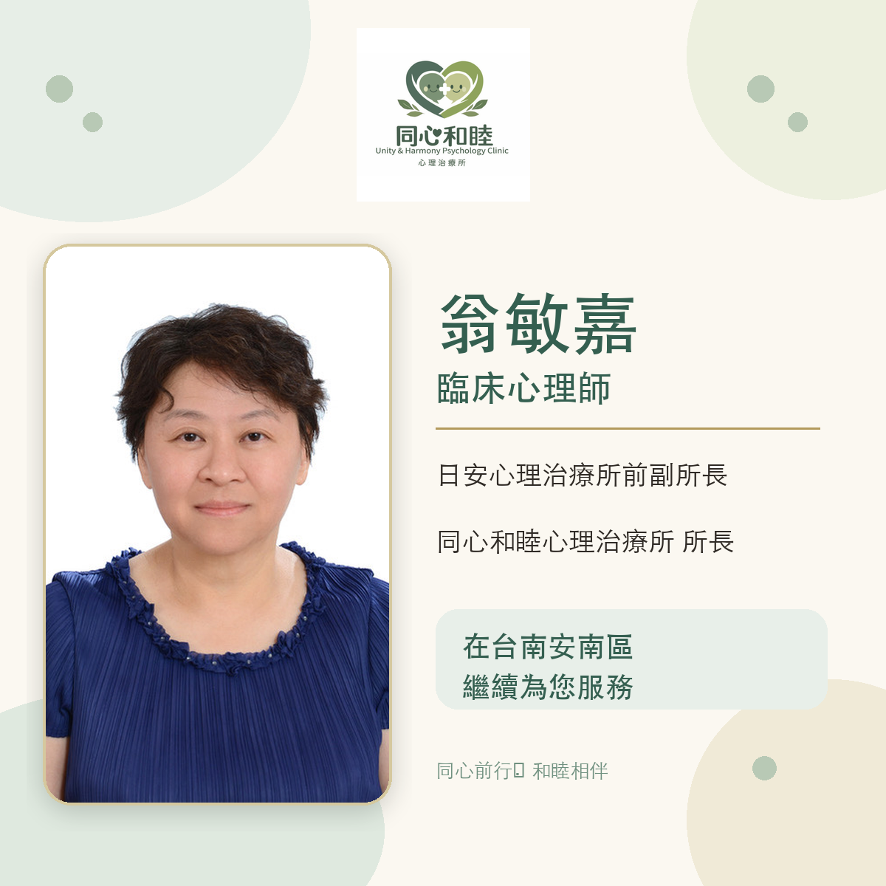

LATEST NEWS
翁敏嘉臨床心理師
在台南安南區繼續為您服務
｜同心和睦心理治療所

翁敏嘉臨床心理師曾任日安心理治療所副所長，現於台南市安南區成立同心和睦心理治療所並擔任所長，繼續以臨床專業陪伴兒童、青少年、成人與家庭。
翁敏嘉心理師為國家考試合格臨床心理師，臨床心理師證書字號為臨心字第000405號。服務內容包含幼兒發展評估與早期療育、兒童與青少年心理治療、成人個別心理治療、親子關係與親職教養諮詢，以及團體心理治療。
同心和睦心理治療所位於台南市安南區生態二街60號，採完全預約制。送出初次預約資料後，工作人員將聯繫了解需求並確認可安排時間；送出資料不代表預約已成立。